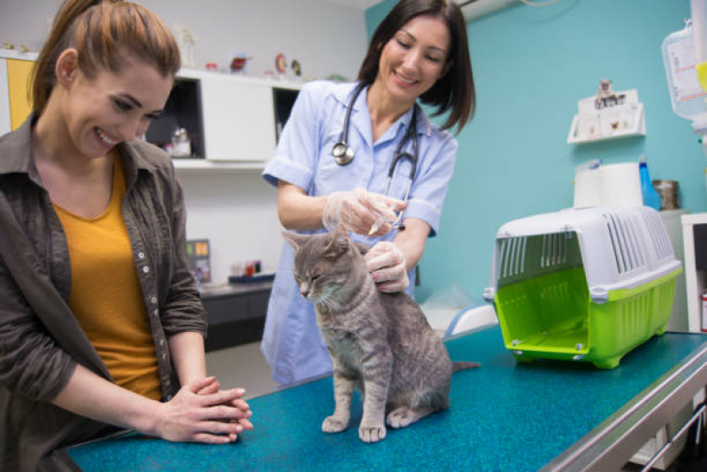
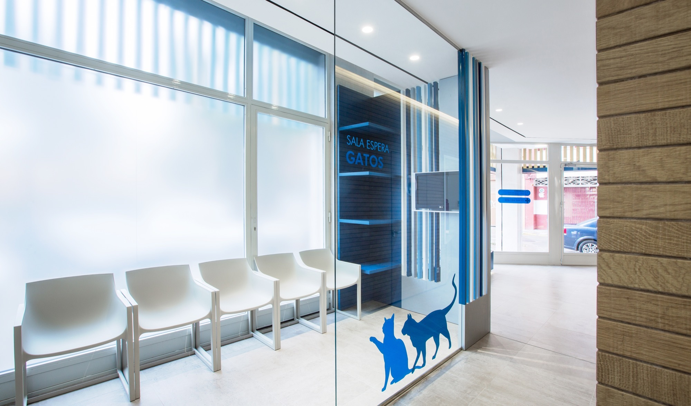
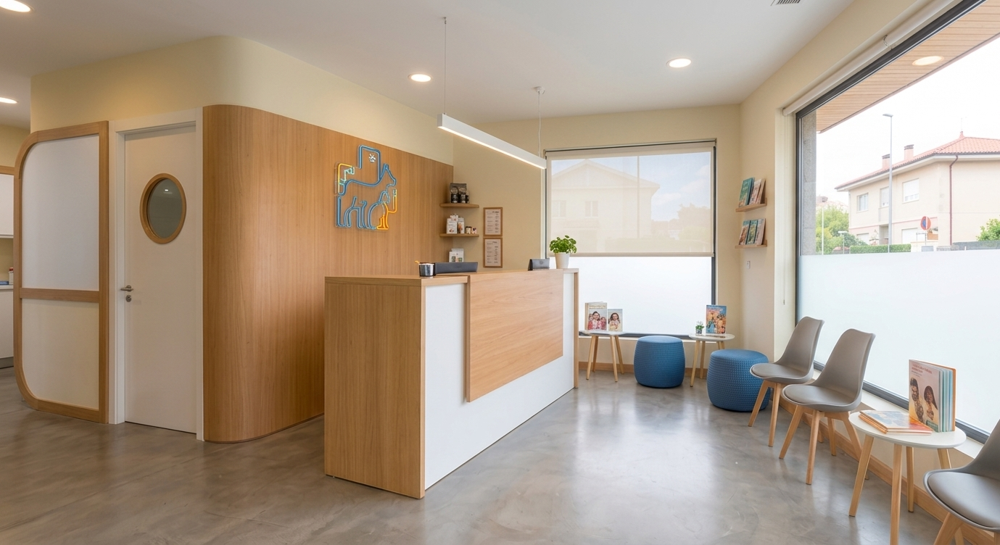
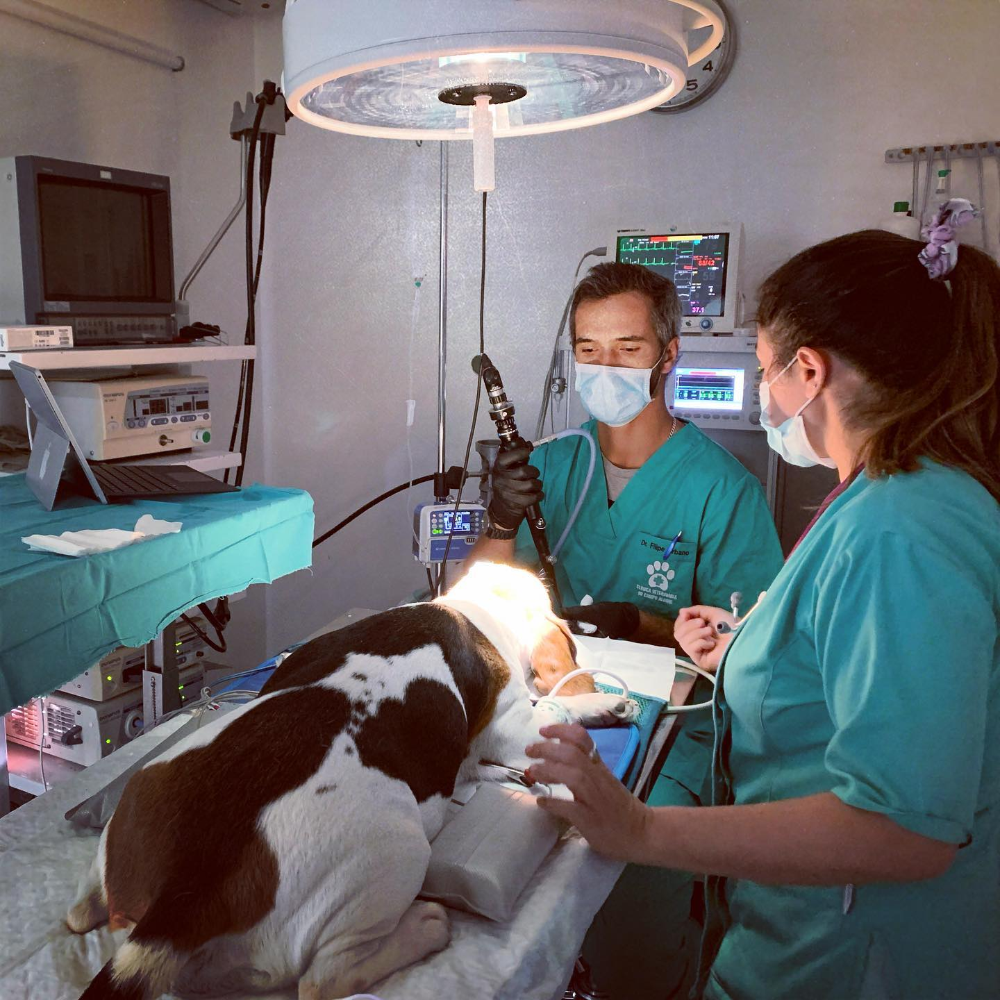
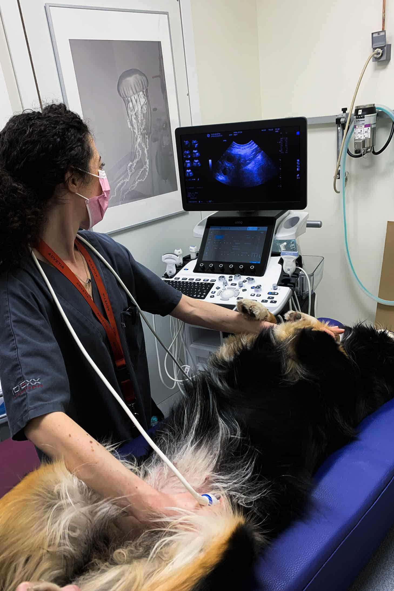

Consultorios Equipados
Espacios confortables diseñados para minimizar el estrés de las mascotas.

En Veterinaria La Mary, somos un centro de salud animal comprometido con brindar una atención médica integral y de alta calidad para las mascotas de nuestra comunidad. Con años de trayectoria, combinamos experiencia científica, tecnología adecuada y, por sobre todo, un profundo amor por los animales, garantizando que cada paciente reciba un trato digno, seguro y personalizado en cada etapa de su vida.

Espacios cómodos y diseñados para reducir el estrés de tus mascotas durante la consulta.



Espacios confortables diseñados para minimizar el estrés de las mascotas.

Monitoreo multiparamétrico y equipamiento de alta precisión.

Radiografía y ecografía de última generación para mayor precisión.
Proteger, restaurar y mantener la salud y el bienestar de los animales de compañía. Ofrecemos soluciones médicas eficientes mediante un equipo profesional altamente capacitado.
Consolidarnos como la clínica veterinaria de referencia en la región, reconocidos por nuestra excelencia médica, actualización constante y calidez humana.
• Compromiso Animal: Prioridad absoluta en la salud del paciente.
• Ética Profesional: Honestidad y responsabilidad médica.
• Calidez y Empatía: Trato cercano con las familias.
• Excelencia: Mejora clínica continua.